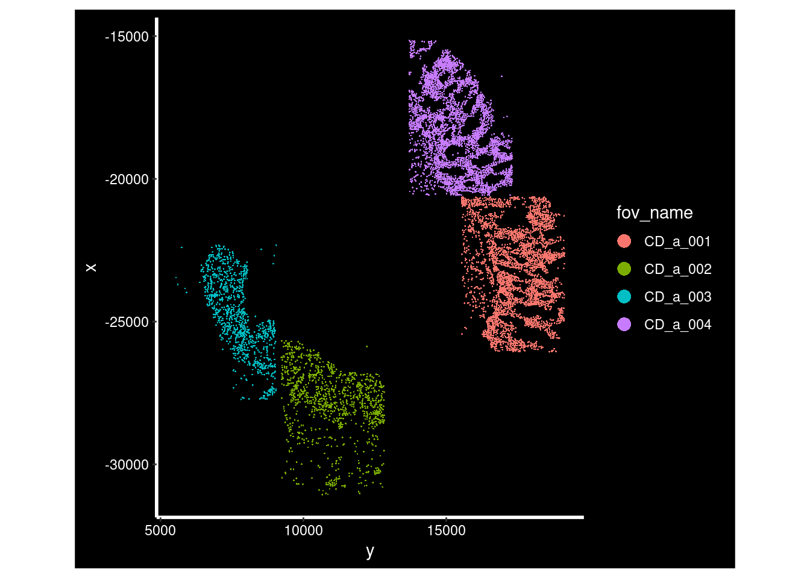

9 Reduce dimensionality
9.1 Normalisation
# Basic preprocessing
# Split layers out again
# https://satijalab.org/seurat/articles/seurat5_integration
so <- split(so, f = so$orig.ident)
# Run through preprocessing
so <- NormalizeData(so)## Normalizing layer: counts.GSM7473682_HC_a## Normalizing layer: counts.GSM7473683_HC_b## Normalizing layer: counts.GSM7473684_HC_c## Normalizing layer: counts.GSM7473688_CD_a## Normalizing layer: counts.GSM7473689_CD_b## Normalizing layer: counts.GSM7473690_CD_c9.2 Find Highly variable genes.
Explain: Each point represents a gene, red = HVGs selected
so <- FindVariableFeatures(so, nfeatures = 200)## Finding variable features for layer counts.GSM7473682_HC_a## Finding variable features for layer counts.GSM7473683_HC_b## Finding variable features for layer counts.GSM7473684_HC_c## Finding variable features for layer counts.GSM7473688_CD_a## Finding variable features for layer counts.GSM7473689_CD_b## Finding variable features for layer counts.GSM7473690_CD_c
so <- ScaleData(so) # Just 200 variable features## Centering and scaling data matrix
so <- RunPCA(so, features = VariableFeatures(so))## PC_ 1
## Positive: PIGR, EPCAM, KRT8, KRT19, CLDN4, FCGBP, LGALS3, S100A6, CD24, AGR2
## KRT20, KRT17, ITLN1, CEACAM1, SFN, SOX9, PLAC8, EZR, CEACAM6, B3GNT7
## MT1X, AQP8, S100P, OLFM4, EPHA2, LEFTY1, FFAR4, DDC, TNFRSF11A, RNF43
## Negative: CD74, IGHG1, HLA-DRB1, IGHG2, HLA-DRA, HLA-DPA1, IGKC, LYZ, HLA-DQA1, C1QC
## COL1A1, C1QA, C1QB, HLA-DPB1, HLA-DRB5, COL3A1, PTGDS, HLA-DQB1, CXCR4, CIITA
## CD163, COL1A2, COL6A2, GPNMB, IGHM, COL6A3, CD37, COL6A1, IGFBP7, MZB1
## PC_ 2
## Positive: JCHAIN, IGHA1, MZB1, DERL3, IGKC, XBP1, IGHG1, IGHG2, IRF4, TNFRSF13B
## BMP6, IGHM, TPSB2, CXCL14, CD37, CSF2, CD5L, TCL1A, CPA3, IL7R
## APOD, MS4A1, CXCR4, ADAMDEC1, PECAM1, HBB, CCL3, CD52, TEK, IL1RL1
## Negative: S100A6, MT2A, THBS1, LGALS3, SAT1, HLA-DRA, GSN, C1QC, MT1X, LYZ
## CD163, C1QB, C1QA, COL1A1, COL3A1, HLA-DPB1, HLA-DRB1, CD14, HLA-DPA1, COL1A2
## CHI3L1, C11orf96, EPCAM, COL6A3, GPNMB, CLDN4, COL6A1, SERPINA1, SELENOP, COL6A2
## PC_ 3
## Positive: CD74, HLA-DRB1, LYZ, HLA-DRA, HLA-DQA1, HLA-DPA1, HLA-DRB5, IGHG2, IGHG1, HLA-DQB1
## C1QB, C1QC, CIITA, IGKC, C1QA, HLA-DPB1, SAT1, EZR, CD37, CD163
## IGHA1, CXCR4, ITGAX, MMP9, CD14, CD52, XBP1, CXCL9, IGHM, SERPINA1
## Negative: COL6A2, COL6A1, TPM2, TAGLN, MYH11, ACTA2, FN1, C11orf96, COL1A1, ACTG2
## COL3A1, MYL9, IGFBP7, COL6A3, COL1A2, DCN, COL4A1, IGFBP5, MEG3, THBS1
## SPARCL1, ITGA5, COL14A1, LUM, MGP, GSN, PDGFRB, PDGFRA, CLU, CRYAB
## PC_ 4
## Positive: IGHA1, IGKC, JCHAIN, MZB1, XBP1, DERL3, IGHG2, IGHG1, COL3A1, COL1A1
## COL1A2, COL6A3, PDGFRA, CXCL14, LUM, LGALS3, MT2A, MEG3, MMP19, CDKN1A
## KRT20, CHI3L1, VEGFA, CFD, THBS1, MT1X, CD24, AQP8, KRT19, BMP6
## Negative: CCL21, CXCR4, CD52, IL7R, FYB1, ARHGDIB, CCL19, MYH11, CD37, ACTA2
## ACTG2, HLA-DPB1, CIITA, MS4A1, IGFBP5, IGHD, DUSP2, CD74, TPM2, HLA-DRA
## SPARCL1, TAGLN, KLRK1, CD83, CLU, CCL5, ITGAX, MMP9, HLA-DPA1, CTLA4
## PC_ 5
## Positive: ITLN1, OLFM4, AGR2, LEFTY1, SOX9, HMGB2, H4C3, EPHB3, IL17RB, DDC
## RNF43, XBP1, TNFRSF11A, SOX4, EZH2, CXCL3, B3GNT7, MKI67, SERPINA1, TOP2A
## FCGBP, PIGR, LIF, CXCL2, CHGA, IL20RA, CXCL1, GCG, VEGFA, DERL3
## Negative: KRT20, CEACAM1, SELENOP, AQP8, PLAC8, CEACAM6, CDKN1A, DST, EZR, KRT17
## GSN, KRT19, SFN, FOS, EPHA2, LAMA3, CLDN4, CXCR4, HLA-DRA, HLA-DPA1
## MAF, HLA-DPB1, IL7R, CCL21, LGALS3, PTGDS, CCL19, HLA-DQA1, C1QC, MT2A
DimPlot(so, reduction = "pca", group.by='tissue_sample')
ElbowPlot(so)
num_dims <- 15Build a UMAP
so <- RunUMAP(so, dims=1:num_dims)## Warning: The default method for RunUMAP has changed from calling Python UMAP via reticulate to the R-native UWOT using the cosine metric
## To use Python UMAP via reticulate, set umap.method to 'umap-learn' and metric to 'correlation'
## This message will be shown once per session## 06:47:59 UMAP embedding parameters a = 0.9922 b = 1.112## 06:47:59 Read 50662 rows and found 15 numeric columns## 06:47:59 Using Annoy for neighbor search, n_neighbors = 30## 06:47:59 Building Annoy index with metric = cosine, n_trees = 50## 0% 10 20 30 40 50 60 70 80 90 100%## [----|----|----|----|----|----|----|----|----|----|## **************************************************|
## 06:48:06 Writing NN index file to temp file /tmp/Rtmp42UJ5n/file194de051d146c7
## 06:48:06 Searching Annoy index using 1 thread, search_k = 3000
## 06:48:32 Annoy recall = 100%
## 06:48:33 Commencing smooth kNN distance calibration using 1 thread with target n_neighbors = 30
## 06:48:38 Initializing from normalized Laplacian + noise (using RSpectra)
## 06:48:40 Commencing optimization for 200 epochs, with 2235096 positive edges
## 06:48:40 Using rng type: pcg
## 06:49:04 Optimization finishedAnd plot it - DimPlot will plot a UMAP if it is found, but ‘umap’ (or ‘pca’) can be explictly specified.
DimPlot(so, group.by='tissue_sample') # If umap exists, umap.
# DimPlot(so, group.by='tissue_sample', reduction = 'umap') # ths sameNow is the time to plot everything;
Categorical factors with ‘DimPlot’
DimPlot(so, group.by='tissue_sample')
DimPlot(so, group.by='condition')
DimPlot(so, group.by='tissue_sample', split.by='condition') And anything continuous with ’FeaturePlot
And anything continuous with ’FeaturePlot
FeaturePlot(so, 'nCount_RNA') ## Warning: The `slot` argument of `FetchData()` is deprecated as of
## SeuratObject 5.0.0.
## ℹ Please use the `layer` argument instead.
## ℹ The deprecated feature was likely used in the Seurat
## package.
## Please report the issue at
## <https://github.com/satijalab/seurat/issues>.
## This warning is displayed once every 8 hours.
## Call `lifecycle::last_lifecycle_warnings()` to see where
## this warning was generated.
FeaturePlot(so, 'nCount_negprobes') 
FeaturePlot(so, 'pc_neg') 
Including genes - can pass severable at a time and
FeaturePlot(so, c('CD74','PIGR','IGHA1','VWF'), ncol=2 )